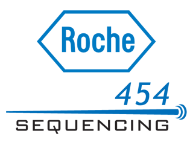

Sequencing platforms
Is there any difference from bioinformatics perspective?..
-
x

Roche 454
-
x
_logo.jpg) Illumina
Illumina
-
x
IonTorrent
What Wikipedia says...
...and how does it look like:
What Wikipedia says...
...and how does it look like:
What Wikipedia says...
...and how does it look like: